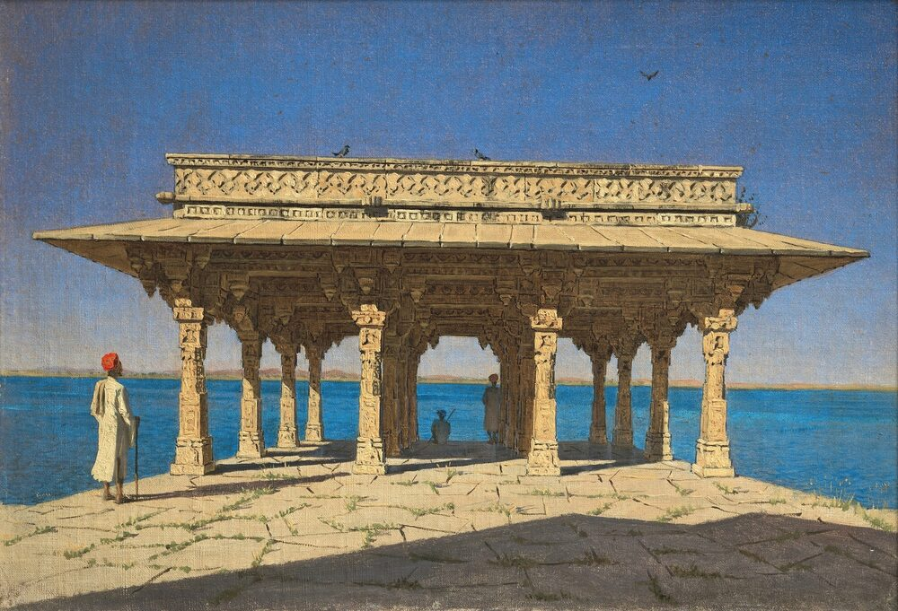

B1 · Travel & Places
Four Months in Southeast Asia
Singapore, Cambodia, Vietnam and Bali — told over the phone, in the tense English uses for a trip that is still going on.
Reading
Play the audio and follow along, then read it again on your own. Tap or hover over a highlighted word to see what it means.
Patricia and Christopher have been traveling through Southeast Asia for four months. They are somewhere near the end of it now, and the way they describe the trip has changed — the first calls home were lists of everything they had seen in a day, and the recent ones are mostly about people they have met.
“We've been in Singapore a week,” Patricia told their son on the phone at the start. “We've done Gardens by the Bay, we've walked all through Chinatown, and last night we went round the zoo after dark, which sounds strange and was the best thing so far.” Christopher added that they had been eating almost entirely in hawker centres — the covered food halls where dozens of small stalls each cook one or two things extremely well — and that a plate of chicken rice had cost about the same as a bottle of water at the airport. They ate chilli crab, which requires both hands and a considerable number of napkins, and laksa, a coconut noodle soup that Patricia has been trying to reproduce ever since.
From Singapore they went to Cambodia. “We've been here three days,” Christopher told his parents, “and we've spent almost all of it at the temples.” Angkor Wat is the one everybody knows, but the complex around it runs for kilometers, and the temples they both remember are the smaller ones where the forest has been left to grow through the stonework. They have been reading about the Khmer Empire in the evenings, partly because the guides kept referring to a history neither of them knew anything about. They ate amok, a fish curry steamed in banana leaf, and lok lak, and drank Khmer coffee, which is strong enough to change the shape of an afternoon.
Vietnam was the part they had planned least and enjoyed most. They hired a motorbike and a guide and spent five days riding through the countryside north of Huế. “We've been going through rice fields and villages all week,” Patricia told her sister. “It's been hard work — I hadn't ridden a motorbike in twenty years — but you see how people actually live, which you don't from a bus.” They also took an overnight boat through Ha Long Bay, among the limestone islands that rise straight out of the water, and ate a great deal of street food: banh mi, pho, and iced coffee made with condensed milk, which Christopher has now had every single day for three months.
Bali was deliberately last, because they knew they would need it. They have been staying in a small place outside Ubud, and the pace of the trip has dropped to almost nothing. Patricia has been doing yoga in the mornings. They walk through the rice terraces, they have taken a cooking class — mostly so they could keep making nasi goreng and satay when they got home — and Christopher went snorkelling off the coast at Amed and came back talking about turtles for two days.

Ask them now what the trip has been about and neither says the temples or the beaches. Patricia says it has been the food, and specifically eating it at a plastic table on a street with people who live there. Christopher says it has been finding out how much of what he was certain about was just what he was used to. They have three weeks left, and they have already started saying “next time”, which is usually a sign that a trip has worked.
Key Vocabulary
- hawker centre a covered hall of small food stalls, common in Singapore and Malaysia
- stall a small booth or counter selling one kind of thing
- napkin a cloth or paper square for wiping your hands and mouth
- to reproduce to make something again exactly as it was
- complex a group of connected buildings forming a single site
- stonework the built stone parts of a structure
- to refer to to mention something as though it is already known
- to steam to cook over boiling water rather than in it
- to hire to pay to use something for a period
- rice terrace a flat step cut into a hillside for growing rice
- limestone a pale rock that weathers into dramatic shapes
- condensed milk thick sweetened milk with the water removed
- pace the speed at which something happens
- to snorkel to swim at the surface with a mask and breathing tube
- to be certain to have no doubt
- to be used to to be familiar with something through habit
Four Months in Southeast Asia — B1 · Travel & Places · Renan the Teacher, English Language Academy · https://renangrossi.github.io/englishclasses/reading/b1/southeast-asia-adventure.html
Interactive Exercises
Practice
Complete each exercise, then click Submit to see your score and an explanation for every answer.
Speaking & Writing
Discussion
There are no right answers here — use these to practice speaking, or write a short answer to each.
- Their calls home changed from lists of sights to stories about people. Why might that happen on a long trip?
- Vietnam was planned least and enjoyed most. How much of a trip should be planned?
- Christopher says he found out how much of what he was certain about was just habit. Has traveling ever done that to you?
- Patricia says the trip was about eating at a plastic table with people who live there. Is that a better way to understand a place than visiting its monuments?
- Write about 150 words about a trip you are on or have just taken, using the present perfect for what you have done and the continuous for what you have been doing.